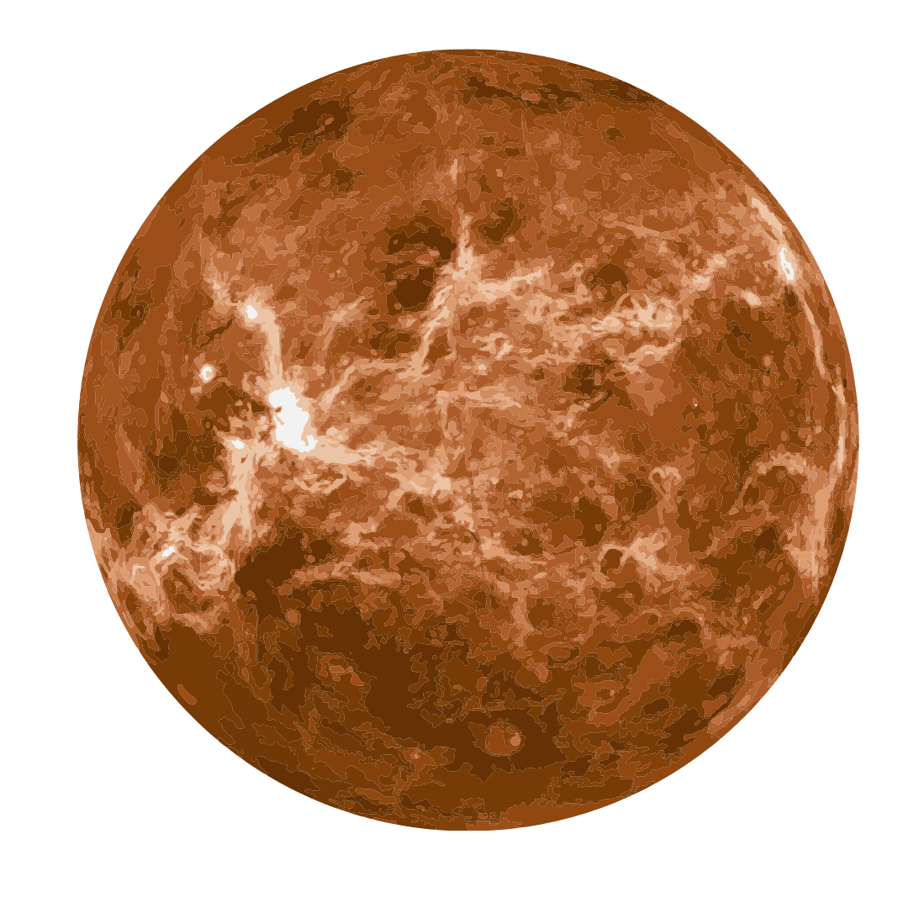
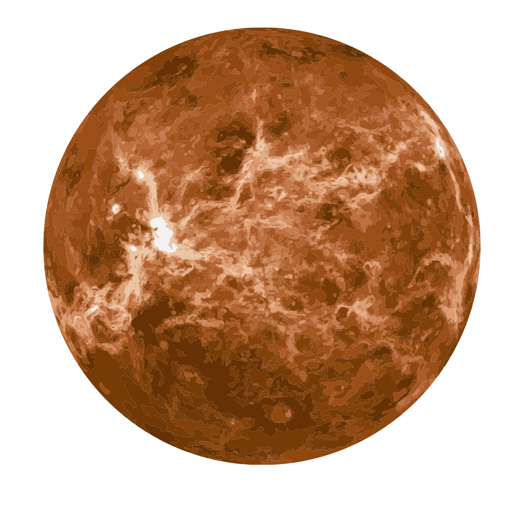

|
|

|
אחד משמונה כוכבי הלכת הקלאסיים במערכת השמש, והוא הקרוב ביותר אל השמש - השנה שלו אורכת 88 ימים בלבד.
כוכב חמה הוא כוכב לכת סלעי בדומה לכדור הארץ, כלומר הוא קטן ודחוס, ועשוי בעיקר סלע בניגוד לכוכבי הלכת הגזיים.
כוכב החמה ממש דומה לירח שלנו גם במסתו וגם ושטח פנים אשר בעל מלא מכתשים
לחמה אין ירח משלו וגם לא טבעות להתהדר בהן, והאטמוספרה שלו דלילה ביותר בגלל הקרבה שלו לשמש. הטמפרטורות על פניו יכולות לנוע
ממעל 400 מעלות ביום, ועד כמעט מינוס 200 בלילה! לא טמפרטורות מתאימות לקיומם של חיים, לפחות לא כפי שאנו מכירים